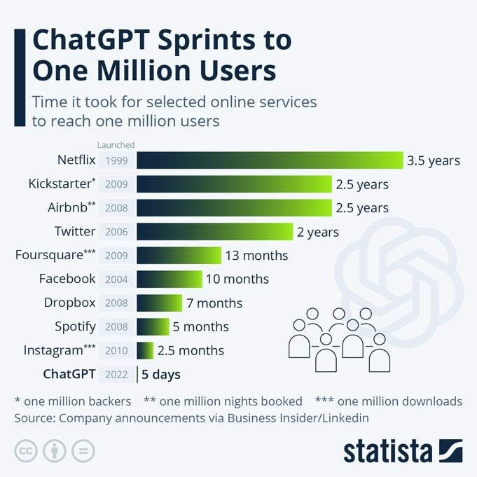

To Learn More about ChatGPT
Click the Image or here

Our team chose the topic of artificial intelligence, more specifically, ChatGPT - a Generative Pre-trained Transformer. ChatGPT, short for Generative Pre-trained Transformer. It is a complex natural language processing technology that falls under artificial intelligence. ChatGPT purpose is to generate human-like text based on the inputs the user put in. It gained a lot of traction recently due to the nature that it can quickly understand and produce an accurate output, making it a significant advancement in the field of technology. It has only taken ChatGPT to reach 1 million users in 5 days. Down below shows some famous application who took way longer to reach a million users.
In choosing ChatGPT, our team recognizes the significant potential this technology holds in shaping the future in multiple ways with the assistance of AI, making it an ideal subject for exploration and analysis in our final project.
Some factors that led us to choose ChatGPT include its ability to comprehend natural language, where AI can understand and respond to natural language inputs, making applications more human-like. Another compelling feature is its capacity for continuous learning and improvement. ChatGPT can adapt to new information and contexts, enabling it to grow and evolve over time. These are just two of the many reasons why we selected this topic.
Click the Image or here